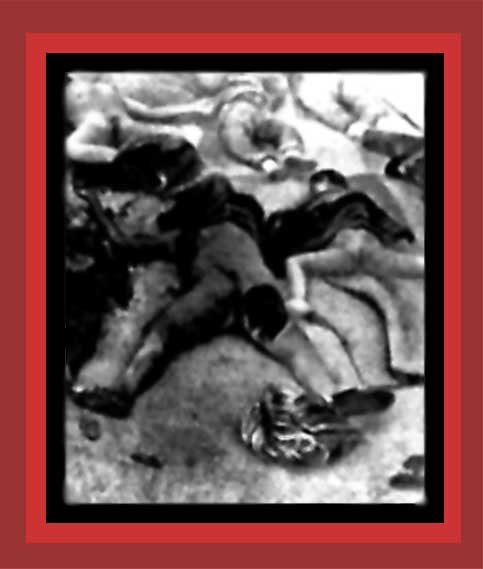

| Shown in this photo are the bodies of Chinese women and girls raped and murdered by Japanese soldiers. For documentation on the total murdered, see China's Bloody Century, Death By Government and Statistics of Democide. Source: "Alliance in Memory of Victims of the Nanjing Massacre". |